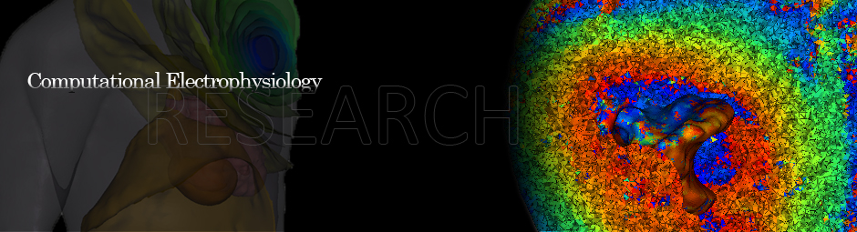

- Correcting Undersampled Cardiac Sources in Equivalent Double Layer Forward Simulations J. D. Tate, S. Schuler, O. Dössel, R. S. MacLeod, T. F. Oostendorp. Functional Imaging and Modeling of the Heart, 2019 Springer International Publishing, Cham.
- Spatial Downsampling of Surface Sources in the Forward Problem of Electrocardiography S. Schuler, J. D. Tate, T. F. Oostendorp, R. S. MacLeod, O. Dössel. Functional Imaging and Modeling of the Heart, 2019 Springer International Publishing, Cham.
- GRÖMeR: A pipeline for geodesic refinement of mesh registration J.A.Bergquist, W.W.Good, B.Zenger, J.D.Tate, R.S.MacLeod. Functional Imaging and Modeling of the Heart, 2019 Springer International Publishing, Cham.
- A High-Resolution Head and Brain Computer Model for Forward and Inverse EEG Simulation A. Warner, J. Tate, B. Burton, C. R. Johnson, A high-resolution head and brain computer model for forward and inverse EEG simulation, bioRxivdoi: 10.1101/552190.
- Effect of Segmentation Variation on ECG Imaging. Jess D. Tate, Nejib Zemzemi, Wilson W. Good, Peter van Dam, Dana H. Brooks, Rob S. MacLeod. Computing in Cardiology 2018.
- Reducing Error in ECG Forward Simulations With Improved Source Sampling. Jess Tate, Karli Gillette, Brett Burton, Wilson Good, Brian Zenger, Jaume Coll-Font, Dana Brooks, Rob MacLeod. Frontiers in physiology 2018
- Measuring defibrillator surface potentials: The validation of a predictive defibrillation computer model. Jess Tate, Jeroen Stinstra, Thomas Pilcher, Ahrash Poursaid, Matthew A Jolley, Elizabeth Saarel, John Triedman, Rob S MacLeod. Computers in biology and medicine 2018
- A Framework for Image-Based Modeling of Acute Myocardial Ischemia Using Intramurally Recorded Extracellular Potentials. Brett M Burton, Kedar K Aras, Wilson W Good, Jess D Tate, Brian Zenger, Rob S MacLeod. Annals of biomedical engineering 2018
- Image-Based Modeling of Acute Myocardial Ischemia Using Experimentally Derived Ischemic Zone Source Representations. BM Burton, KK Aras, WW Good, JD Tate, B Zenger, RS MacLeod. Journal of Electrocardiology 2018
- P1125 Noninvasive localization of premature ventricular complexes: a research-community-based approach. MJM Cluitmans, S Ghimire, J Dhamala, J Coll-Font, JD Tate, S Giffard-Roisin, J Svehlikova, O Doessel, MS Guillem, DH Brooks, RS Macleod, L Wang. EP Europace 2018
- PFEIFER: Preprocessing Framework for Electrograms Intermittently Fiducialized from Experimental Recordings. Anton Rodenhauser, Wilson W Good, Brian Zenger, Jess Tate, Kedar Aras, Brett Burton, Rob S MacLeod. The Journal of Open Source Software 2018.
- Analyzing Source Sampling to Reduce Error in ECG Forward Simulations. Jess Tate, Karli Gillette, Brett Burton, Wilson Good, Jaume Coll-Font, Dana Brooks, Rob MacLeod. Computing in Cardiology 2017
- Overcoming Barriers to Quantification and Comparison of Electrocardiographic Imaging Methods: A Community-Based Approach. Sandesh Ghimire, Jwala Dhamala, Jaume Coll-Font, Jess D Tate, Maria S Guillem, Dana H Brooks, Rob S MacLeod, Linwei Wang. Computing in Cardiology 2017.
- Temporal dilation of animal cardiac recordings registered to human torso geometries. Karli Gillette, Jess Tate, Brianna Kindall, Wilson Good, Jeff Wilkinson, Narendra Simha, Rob MacLeod. Computing in Cardiology 2016
- The consortium for electrocardiographic imaging. Jaume Coll-Font, Jwala Dhamala, Danila Potyagaylo, Walther HW Schulze, Jess D Tate, Maria S Guillem, Peter Van Dam, Olaf Dossel, Dana H Brooks, Rob S Macleod. Computing in Cardiology 2016.
- The role of reduced left ventricular, systolic blood volumes in ST segment potentials overlying diseased tissue of the ischemic heart. Brett Burton, Jess Tate, Wilson Good, Rob S Macleod. Computing in Cardiology 2016.
- Experimental Data and Geometric Analysis Repository—EDGAR. Kedar Aras, Wilson Good, Jess Tate, Brett Burton, Dana Brooks, Jaume Coll-Font, Olaf Doessel, Walther Schulze, Danila Potyagaylo, Linwei Wang, Peter van Dam, Rob MacLeod. Journal of Electrocardiology. doi:10.1016/j.jelectrocard.2015.08.008. 2015
- Generation of combined-modality tetrahedral meshes. Karli Gillette, Jess Tate, Brianna Kindall, Peter Van Dam, Eugene Kholmovski, Rob S MacLeod. Computing in Cardiology 2015.
- Verification of a Defibrillation Simulation Using Internal Electric Fields in a Human Shaped Phantom. Jess Tate, Thomas Pilcher, Kedar Aras, Brett Burton, Rob MacLeod. Computing in Cardiology 2014.
- New Additions to the Toolkit for Forward/Inverse Problems in Electrocardiography within the SCIRun Problem Solving Environment. Jaume Coll-Font, Brett Burton, Jess Tate, Burak Erem, Darrel Swenson, Dafang Wang, Dana H Brooks, Peter van Dam, Rob S Macleod. Computing in Cardiology 2014.
- Measuring Defibrillator Surface Potentials for Simulation Verification. Jess Tate, Jeroen Stinstra, Thomas Pilcher, Ahrash Poursaid, Elizabeth Saarel, and Rob MacLeod. Conference of the IEEE EMBS 2011.
- A Toolkit for Forward/Inverse Problems in Electrocardiography within the SCIRun Problem Solving Environment. Brett Burton, Jess Tate, Burak Erem, Darrell Swenson, Dafang Wang, Michael Steffen, Dana Brooks, Peter van Dam, Rob Macleod. Conference of the IEEE EMBS 2011.
- Finite element modeling of subcutaneous implantable defibrillator electrodes in an adult torso. Matthew Jolley, Jeroen Stinstra, Jess Tate, Steve Pieper, Rob MacLeod, Larry Chu, Paul Wang, John K. Triedman. Heart Rythm 7(5):692-698, 2010
- The Effect of Non-Conformal Finite Element Boundaries on Electrical Monodomain and Bidomain Simulations. Darrell Swenson, Joshua Levine, Zhisong Fu, Jess Tate, Rob MacLeod. Computers in Cardiology 2010.
- Measurement of Defibrillator Surface Potentials for Simulation Verification. Jess Tate, Jeroen Stinstra, Thomas Pilcher, Rob MacLeod. Computers in Cardiology 2010.
- Partially Extracted Defibrillator Coils and Pacing Leads Alter Defibrillation Thresholds. T Pilcher, J Stinstra, J Tate, E Saarel, M Puchalski, R Macleod. 15th World Congress on Heart Disease, 2010